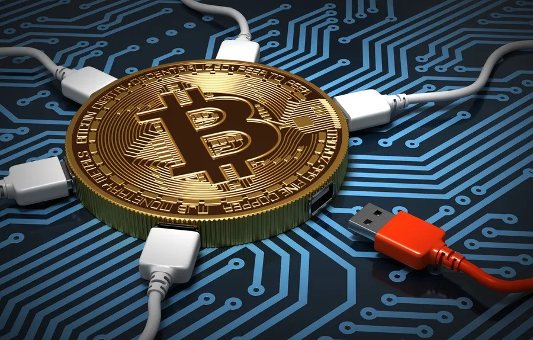

¿Cómo funcionan las criptomonedas?
Las criptomonedas operan mediante la tecnología blockchain, una base de datos abierta y descentralizada que actúa como un libro contable digital. En esta red, cada transacción genera un “bloque” de información que contiene datos sobre la propiedad y un identificador criptográfico del bloque previo. Al enlazarse, todos estos bloques conforman una cadena inmutable de registros verificados por múltiples equipos informáticos conectados a la red. (Charles Schwab, 2025).
Gracias a este sistema, no se requiere la intervención de una autoridad central, ya que cada transacción es validada colectivamente por los nodos de la red, garantizando transparencia y seguridad. Las operaciones de criptomonedas pueden entenderse como mensajes electrónicos que certifican el intercambio de valor entre usuarios sin intermediarios financieros.
Además, la blockchain tiene aplicaciones que van más allá de las monedas digitales. Permite crear contratos inteligentes, automatizar procesos en cadenas de suministro y ofrecer servicios financieros descentralizados, demostrando su potencial como una herramienta tecnológica de amplio alcance en la economía digital contemporánea. (Charles Schwab, 2025).
En la actualidad, las criptomonedas se emplean tanto como medio de pago alternativo al dinero fiduciario como instrumento de inversión. Sin embargo, a diferencia de los activos financieros regulados, no cuentan con un marco legal específico ni con garantías de protección al consumidor. Se estima que existen más de 9 000 criptomonedas activas en el mercado, entre las cuales destacan Bitcoin, Ethereum, Tether y Ripple. (Banco Santander, 2022).
